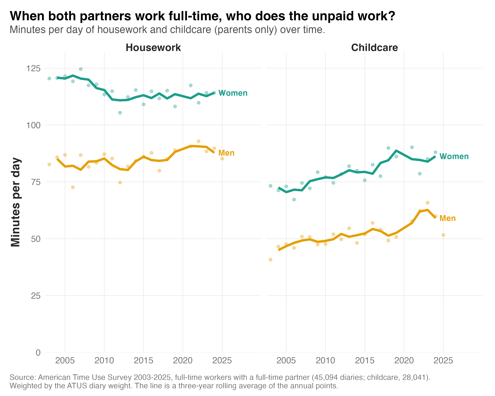

In a recent post, I looked at what activities lose out when the workday runs longer than usual. Turns out, women gave up more housework than men did, and on short days they caught up on more of it. That fits with the idea that women still carry more of the household load.
So I wanted to look at this more directly. When both partners work full-time, who does the housework and the childcare? And has that changed over the last 20 years?
To find out, I used 45,094 diaries from the American Time Use Survey, completed between 2003 and 2025 by people who work full-time and whose partner also works full-time. For childcare, I looked only at the 28,041 diaries from parents with a child at home.

Here's what I found:
1) Women still do more of both. Over the last five years, women did about 114 minutes of housework a day, compared with 89 for men. Mothers did about 85 minutes of childcare a day, compared with 60 for fathers.
2) The housework gap is closing, slowly. It fell from 38 minutes a day in 2003-07 to 25 minutes in 2021-25, because men did a little more and women did a little less. That is a narrowing of about seven minutes per decade. At that rate, the gap would take another 35 years to close.
3) Mothers and fathers both spend about 13 minutes a day more on childcare than they did 20 years ago. But the childcare gap hasn't closed. Because both increased by about the same amount, the gap has stayed at around 25 minutes a day.
Put together, the two gaps add up to about 50 minutes a day for parents. Over a year, that is roughly eight extra 40-hour working weeks for mothers who work full-time, about four of housework and about four of childcare.